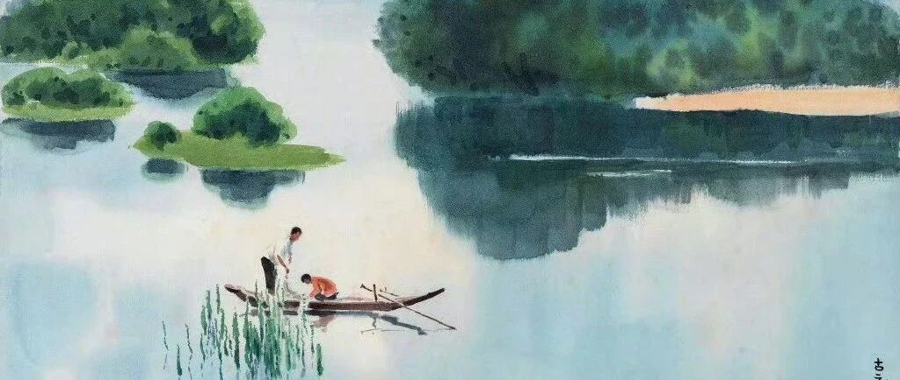

我做到了人生最幸福的3件事。
点击关注 秋秋在分享
一起实现财务自由退休
大家好，我是秋秋呀！
你知道人生最幸福的事是什么吗？
1、一个妈妈刚刚给自己的孩子洗完澡，抱着TA的那个时刻
2、一个医生治疗好了自己的病人，和病人挥手告别的瞬间
3、一个孩子在海滩上，用沙子修建完自己城堡的时候
这是一个票选。
毕淑敏老师在《百家讲坛》里说由于答案太多，专家们又加了一条：作家给作品写下最后一个句号的时刻。

那什么是幸福？
哈佛大学的研究表明，幸福等于：
选择的自由+良好的关系+每天都有成长的感觉！
1⃣️ 选择的自由：也是自由意志的体现。
如果你连基本权利都没有，肯定不幸福的。
在人生3-5个关键时期，比如选专业，选伴侣，定居买房，都能独自做决定人，幸福感比受限的人能高出2.8倍。
能主动选择的人，60岁时生活满意度超过没有的人22%。
有说“不”的自由，真的很重要。
2⃣️ 良好的关系：包括和伴侣、亲人、挚友。
哈佛这项长达75年的调查研究显示，幸福的婚姻不仅能保护我们的身体，还能保护我们的大脑。
孤独感对健康的危害，相当于每天吸15支香烟！
而至少有3个深度关系的个体，55岁后认知衰退风险降低68%，心血管疾病死亡率下降52%。

3⃣️成长的感觉：也就是有成就感、意义感。
意义感可以同时产出多巴胺和血清素。
短期目标完成能促进血清素提升19%，终生追求能让阿尔兹海默症发病率降低44%。

选择的自由+良好的关系+每天都有成长的感觉，就是幸福的要素。
给孩子洗完澡的妈妈，代表她拥有良好的关系。
医生治好病人、孩子建造城堡、作家写完作品，代表他们获得了成就感。
这背后，也是他们拥有自由、能全身心享受当下的时刻。
FIRE（财务自由、提前退休）之后，我就一直被这三件事围绕！
我有选择的自由。
提前退休后，我拥有很多时间，可以自在的与大自然接触，可以去运动去感受，可拒绝自己不想做的事。
我有良好的关系。
我的家庭带给我百分之百的力量。我的宝宝很可爱很聪明，我的爱人很善良包容。
我有成就感。
我学了很多技能，摄影剪辑绘画围棋化妆外语……也参加各种志愿者活动。
我是一个能出去玩、能旅游去看演唱会的老婆、妈妈，也是一个拥有自由，每天都有成就感的我自己。
如果Fire生活分为三个板块，那这就是我接下来要维持的主题。
纳瓦尔说：如果成功的目的是幸福，不如直接追求幸福。
英国哲学家大卫.休谟也说过: 人类刻苦勤勉的终点就是获得幸福。
我问了DeepSeek，怎么维持这三点呢？
一、良好的关系

方法：精准社交投资模型
用黄金社交配比。
每周分配3小时给强关系（家人/挚友）
2小时给弱关系（兴趣社群/行业交流）
1小时给陌生人连接（随机对话/志愿服务)
该比例可使催产素与血清素水平达到最佳衡 。

另外，我们要确保关系的质量而不是数量。
勇敢走出去，也要筛选掉不投机的人。
二、经常的成就感

方法：目标动力学设计
用量子式任务分解。
其实意义感都是自己给予的。
散步本身没有意义，但是你能徒步100公里就觉得很有成就感。
把大目标拆解为15分钟可完成的"微成就单元"，每完成1单元就奖励自己一次。
像我骑自行车，每打卡一个新路线就会很幸福。
三、选择的自由

方法：在不确定性中建构自主权
用决策带宽扩容技术。
我们可以在日常生活中就训练自己，建立自己的选择模板。比如服装搭配、饮食选择都是自由的，慢慢也能让自己变高效，节省日均72分钟认知资源 。
大的决定都是从小开始，如果没有每天定投100元的经历，在拿到几百万还真把控不了这些财富。
最后，希望我们都能获得幸福！
去做自由的选择，去拥有良好的关系，去拥抱每天都崭新的自己吧！
这里没提到金钱也并不是它不重要，明天我会写篇文章，想和大家再聊聊钱在幸福中的相对作用。